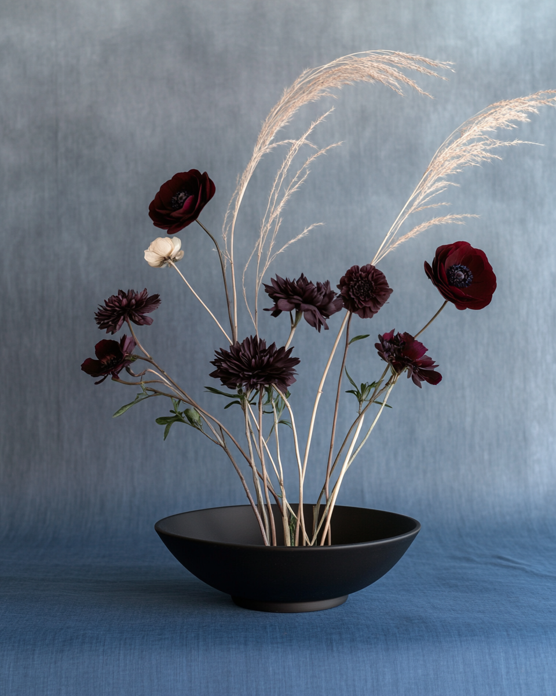

Daeun Choi

[Write something about yourself here "” who you are, what draws you to make things, the questions your work keeps returning to.]
Based in Los Angeles. Open to collaborations, commissions, and conversations.

[Write something about yourself here "” who you are, what draws you to make things, the questions your work keeps returning to.]
Based in Los Angeles. Open to collaborations, commissions, and conversations.